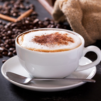
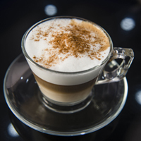
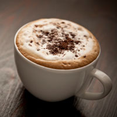

725-60-60") +7(353)725-60-60
+7(353)725-60-60
Кофе капучино
Происхождение названия напитка связано с тем, что в Европе XVII века название ордена капуцинов служило, в частности, и для обозначения характерного цвета (красно-коричневого), который имели рясы монахов этого ордена; в XVIII веке так же стали называть кофейный напиток из яичных желтков и сливок, который стали готовить в Австрии (нем. Kapuziner). Итальянская форма названия напитка (cappuccino) фиксируется лишь с XX века.
Классический итальянский напиток готовится по следующему рецепту: в керамическую чашку из кофемашины наливается доппио (двойная порция) эспрессо, после чего в чашку вливается подогретое и вспененное паром молоко. Иногда при вливании молока в эспрессо бариста особыми движениями создают на поверхности напитка рисунок — такая техника называется латте-арт. Качество эспрессо, температура молока, его консистенция и пропорции очень важны для получения хорошего капучино. Основа напитка закладывается в пропорциональном соотношении молока и эспрессо — пять к одному. Также текстура вспененного молока должна быть мелкодисперсной и походить на стеклянную поверхность, а его температура в питчере должна быть в пределах 60—65 °C. При достижении данной температуры в молоке происходит расщепление лактозы на глюкозу и галактозу, что делает его сладким.
  Традиционно капучино подаётся в предварительно прогретой керамической чашке, объёмом не более 210 мл. В Италии капучино подаётся в особой чашке — тацца, — по форме напоминающей миску с ручкой. Тацца всегда изготовлена из толстостенной керамики. Как и в случае с эспрессо, чашка для капучино должна быть предварительно прогрета, поэтому в кофейнях эти чашки хранятся на кофемашинах, подогреваемые теплом от бойлеров. В Италии капучино обычно пьют за завтраком вместе с булочкой